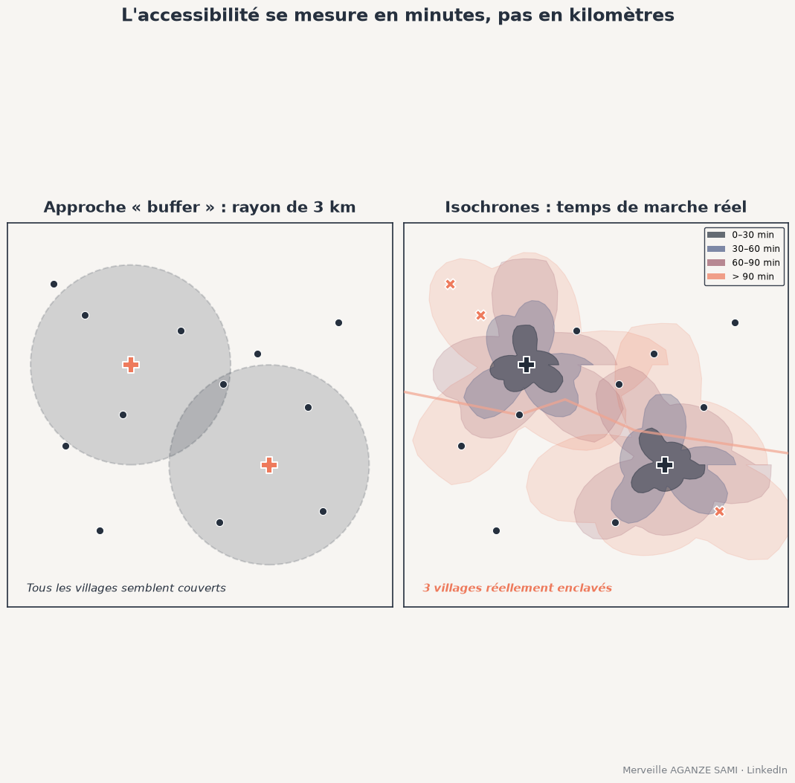

L'évaluation de la couverture géographique d'un service repose fréquemment sur un rayon fixe tracé autour de chaque structure : cinq kilomètres pour un centre de santé, une heure de marche estimée forfaitairement. Les localités situées à l'intérieur sont comptées comme desservies.
Cette approche présente une limite immédiate. Un rayon suppose un déplacement en ligne droite à vitesse constante, hypothèse rarement vérifiée en milieu rural : un relief marqué, un cours d'eau sans point de franchissement ou une piste impraticable en saison des pluies allongent considérablement le trajet réel. La couverture ainsi calculée est systématiquement surestimée, et l'erreur se concentre précisément sur les zones les plus difficiles d'accès.
1. Deux familles de méthodes
La première calcule le temps de parcours le long d'un réseau de routes et de sentiers, chaque tronçon recevant une vitesse selon sa nature et son état. Cette approche convient lorsque le réseau est correctement renseigné et que les déplacements l'empruntent effectivement.
La seconde construit une surface de coût sur une grille : chaque cellule reçoit une vitesse de déplacement selon l'occupation du sol, la pente et la présence éventuelle d'une voie, puis un algorithme calcule le temps cumulé minimal depuis chaque point de service. Cette approche accepte les déplacements hors réseau, courants en milieu rural. La comparaison des deux familles montre que le choix influe sensiblement sur les résultats et doit être justifié (Delamater et al., 2012).
La pente n'est pas symétrique. La vitesse de marche dépend de l'inclinaison du terrain, et la relation n'est pas la même en montée qu'en descente. Une formulation classique exprime cette dépendance sous forme d'une fonction de la pente (Tobler, 1993). Les outils conçus pour l'accessibilité aux services de santé intègrent ce caractère anisotrope du déplacement, de sorte que le temps d'aller et celui de retour diffèrent (Ray & Ebener, 2008).
2. Les paramètres qui déterminent le résultat
- Vitesses par type de surface. Route revêtue, piste, sentier, savane, forêt dense, zone marécageuse : les valeurs retenues sont l'hypothèse la plus lourde du modèle. Elles gagnent à être calibrées sur des temps de trajet réellement observés plutôt que reprises d'une publication.
- Mode de déplacement. Marche, moto, véhicule, ou combinaison. Un modèle unique appliqué à toute la population masque des écarts d'accès considérables entre ménages.
- Saison. En contexte tropical, la praticabilité varie fortement entre saison sèche et saison des pluies. Deux jeux d'isochrones sont plus informatifs qu'un seul, et l'écart entre les deux constitue en soi un indicateur de vulnérabilité.
- Franchissements. Ponts, bacs et gués conditionnent l'accès de façon binaire. Leur omission dans les données produit des résultats faux, non simplement imprécis.
- Point d'origine. Centroïde de localité, bâti recensé ou grille de population : le choix modifie les temps calculés, surtout pour des localités étendues.
3. Le temps de parcours ne suffit pas
Une distinction utile sépare l'accès physique — atteindre la structure — de l'accès effectif — y recevoir un service. Une structure atteignable en trente minutes mais dépourvue de personnel ou saturée ne procure pas l'accès que la carte suggère.
Les mesures dites de zone de captage flottante intègrent cette dimension en rapportant la demande potentielle à la capacité offerte, dans un rayon de temps donné (Luo & Wang, 2003). Elles produisent un indicateur d'accessibilité plus proche de la réalité vécue, au prix de données supplémentaires sur la capacité des structures.
4. Données disponibles et limites
Des surfaces de friction et des cartes mondiales de temps d'accès sont désormais disponibles et fournissent un point de départ utile lorsque les données locales manquent (Weiss et al., 2018) (Weiss et al., 2020). Leur résolution et la généralité de leurs hypothèses en font toutefois un complément, non un substitut à une modélisation locale lorsque la décision porte sur l'implantation d'une structure.
- Complétude du réseau. Les bases collaboratives couvrent inégalement les zones rurales. Une piste absente de la base produit une zone artificiellement enclavée ; un sentier inexistant produit l'inverse. Une vérification sur imagerie récente est nécessaire avant tout calcul.
- Résolution du modèle numérique de terrain. Une résolution grossière lisse les ruptures de pente et sous-estime les temps en terrain accidenté.
- Validation par le terrain. Quelques temps de trajet déclarés par des habitants, comparés aux valeurs calculées, suffisent à détecter une erreur de paramétrage majeure. Cette vérification est peu coûteuse et rarement effectuée.
- Lecture des seuils. Les classes de temps retenues — trente, soixante, quatre-vingt-dix minutes — orientent la conclusion. Elles doivent correspondre à des seuils ayant un sens opérationnel documenté, non à une graduation esthétique.
5. Ce que cela change pour le ciblage
Le passage d'un rayon à un temps de parcours modifie généralement la liste des localités considérées comme non desservies, et l'écart se concentre sur les zones de relief marqué ou coupées par un cours d'eau. Ce sont précisément les zones où l'intervention est la plus justifiée et où le rayon théorique conduisait à conclure à une couverture suffisante.
L'indicateur produit — part de la population située à plus de tel temps de marche d'une structure — présente en outre l'avantage d'être interprétable directement par un partenaire, ce qu'une distance à vol d'oiseau n'est pas.
Points essentiels
- Un rayon fixe suppose un déplacement en ligne droite à vitesse constante
- Réseau ou surface de coût : le choix de méthode influe sur le résultat et doit être justifié
- Les vitesses par type de surface constituent l'hypothèse la plus déterminante du modèle
- La saisonnalité et les points de franchissement conditionnent l'accès de façon décisive
- Atteindre une structure ne signifie pas y recevoir un service : la capacité doit être intégrée
L'accessibilité se mesure en temps de trajet, non en distance à vol d'oiseau. Une carte qui confond les deux surestime la couverture là précisément où les difficultés d'accès sont les plus fortes.
Références
- Delamater, P. L., Messina, J. P., Shortridge, A. M., & Grady, S. C. (2012). Measuring geographic access to health care: raster and network-based methods. International Journal of Health Geographics, 11, 15. doi.org/10.1186/1476-072X-11-15
- Luo, W., & Wang, F. (2003). Measures of Spatial Accessibility to Health Care in a GIS Environment: Synthesis and a Case Study in the Chicago Region. Environment and Planning B: Planning and Design, 30(6), 865–884. doi.org/10.1068/b29120
- Ray, N., & Ebener, S. (2008). AccessMod 3.0: computing geographic coverage and accessibility to health care services using anisotropic movement of patients. International Journal of Health Geographics, 7, 63. doi.org/10.1186/1476-072X-7-63
- Tobler, W. (1993). Three Presentations on Geographical Analysis and Modeling (Technical Report 93-1). Santa Barbara: National Center for Geographic Information and Analysis.
- Weiss, D. J., Nelson, A., Gibson, H. S., Temperley, W., Peedell, S., Lieber, A., et al. (2018). A global map of travel time to cities to assess inequalities in accessibility in 2015. Nature, 553, 333–336. doi.org/10.1038/nature25181
- Weiss, D. J., Nelson, A., Vargas-Ruiz, C. A., Gligorić, K., Bavadekar, S., Gabrilovich, E., et al. (2020). Global maps of travel time to healthcare facilities. Nature Medicine, 26, 1835–1838. doi.org/10.1038/s41591-020-1059-1

Merveille Aganze Sami
Conseillère MEL & Gestion de Bases de Données. Plus de 9 ans d'expérience en suivi-évaluation, SIG et digitalisation auprès d'organisations internationales (GIZ, Enabel) en RD Congo.
Une couverture géographique à évaluer ?
Prendre contact